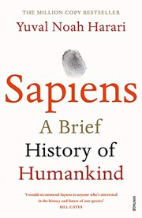
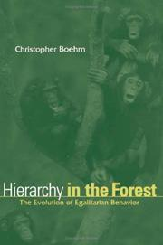

Poster cut sheet
Crop/move these from the browser or GoodNotes; do not use Chrome print as the primary figure renderer.
Natural background matched to allotax HTML.
Book cover thumbnails


Thumbnails are cached locally for poster layout only: Open Library where available, Google Books for Code Economy and How Compassion Made Us Human.
Candidate diamond cutouts
Book v Book: Dawn v Ultrasociety, 3g
Book v Book: Code Economy v Sapiens, 3g
Wiki v Book: WikiText v Sapiens, 3g
Wiki v Book: WikiText v Ultrasociety, 3g
Humans diamond undecided
These are intentionally iframe crops on the natural page background. If a crop is slightly off, adjust by screenshot/cropping rather than printing the raw allotax PDF.
Tight table cutouts
Cells follow the allotax word-list density: three RHS-heavy results per cell, one per line. Ranks are shown as reference ⇋ RHS. Storytelling Animal is out; Case for God is in. Standalone paper-style tables: book v book 3g top3, book v book 3g top5, book v book 3g top10, and wiki v book 3g top40.
Book v Book, 2-gram RHS matrix: three terms per cell
| RHS | Code Economy | Sapiens | Ultrasociety | Dawn of Everything | Guns Germs Steel | Hierarchy | Better Angels | Catching Fire | How Compassion | Case for God |
|---|---|---|---|---|---|---|---|---|---|---|
| Code Economy | of code 93985 ⇋ 6advance of 93985 ⇋ 12the advance 93985 ⇋ 16 | of code 65013.5 ⇋ 6advance of 65013.5 ⇋ 12the advance 65013.5 ⇋ 16 | of code 115454.5 ⇋ 6advance of 115454.5 ⇋ 12the advance 115454.5 ⇋ 16 | of code 98758 ⇋ 6code economics 98758 ⇋ 31the economy 49235.5 ⇋ 25 | of code 77648 ⇋ 6advance of 77648 ⇋ 12the advance 77648 ⇋ 16 | of code 172126.5 ⇋ 6code economics 172126.5 ⇋ 31of work 172126.5 ⇋ 44.5 | of code 51665 ⇋ 6advance of 51665 ⇋ 12the advance 51665 ⇋ 16 | of code 66009 ⇋ 6advance of 66009 ⇋ 12the advance 66009 ⇋ 16 | of code 85879 ⇋ 6the advance 85879 ⇋ 16code economics 85879 ⇋ 31 | |
| Sapiens | agricultural revolution 78528.5 ⇋ 74.5the agricultural 78528.5 ⇋ 74.5believe in 78528.5 ⇋ 104.5 | per cent 78715.5 ⇋ 78.5cent of 78715.5 ⇋ 149agricultural revolution 27266.5 ⇋ 74.5 | human species 127934 ⇋ 199.5cognitive revolution 127934 ⇋ 223.5believe in 59480 ⇋ 104.5 | agricultural revolution 111696 ⇋ 74.5the agricultural 111696 ⇋ 74.5per cent 111696 ⇋ 78.5 | agricultural revolution 91817 ⇋ 74.5the agricultural 91817 ⇋ 74.5per cent 91817 ⇋ 78.5 | agricultural revolution 183800.5 ⇋ 74.5the agricultural 183800.5 ⇋ 74.5per cent 183800.5 ⇋ 78.5 | agricultural revolution 66061 ⇋ 74.5the agricultural 66061 ⇋ 74.5per cent 66061 ⇋ 78.5 | homo sapiens 28328 ⇋ 22agricultural revolution 79746 ⇋ 74.5the agricultural 79746 ⇋ 74.5 | millions of 99235.5 ⇋ 68.5agricultural revolution 99235.5 ⇋ 74.5the agricultural 99235.5 ⇋ 74.5 | |
| Ultrasociety | cultural evolution 64586.5 ⇋ 35of war 64586.5 ⇋ 36of cooperation 64586.5 ⇋ 41.5 | archaic states 93745 ⇋ 56small-scale societies 93745 ⇋ 102.5free riders 93745 ⇋ 127.5 | cultural evolution 115041.5 ⇋ 35of cooperation 115041.5 ⇋ 41.5archaic states 115041.5 ⇋ 56 | cultural evolution 98434 ⇋ 35of cooperation 98434 ⇋ 41.5archaic states 98434 ⇋ 56 | archaic states 77362.5 ⇋ 56cultural evolution 35027.5 ⇋ 35a lot 77362.5 ⇋ 92 | cultural evolution 171375 ⇋ 35archaic states 171375 ⇋ 56the axial 171375 ⇋ 140 | cultural evolution 51823 ⇋ 35of war 51823 ⇋ 36of cultural 51823 ⇋ 39 | cultural evolution 65981 ⇋ 35of cooperation 65981 ⇋ 41.5archaic states 65981 ⇋ 56 | cultural evolution 86034 ⇋ 35of cultural 86034 ⇋ 39archaic states 86034 ⇋ 56 | |
| Dawn of Everything | northwest coast 89002 ⇋ 75.5a state 89002 ⇋ 153it seems 89002 ⇋ 163.5 | northwest coast 116938 ⇋ 75.5appear to 116938 ⇋ 83the northwest 116938 ⇋ 169 | for instance 89016 ⇋ 73northwest coast 89016 ⇋ 75.5no doubt 89016 ⇋ 185.5 | kind of 121419.5 ⇋ 27sort of 121419.5 ⇋ 65.5this was 121419.5 ⇋ 125 | the city 101683.5 ⇋ 50all this 101683.5 ⇋ 56.5human history 101683.5 ⇋ 106.5 | northwest coast 193662.5 ⇋ 75.5the northwest 193662.5 ⇋ 169the wendat 193662.5 ⇋ 206.5 | forms of 76851.5 ⇋ 41.5the city 76851.5 ⇋ 50sort of 76851.5 ⇋ 65.5 | northwest coast 89943.5 ⇋ 75.5north america 89943.5 ⇋ 115one another 89943.5 ⇋ 129 | for instance 109463.5 ⇋ 73northwest coast 109463.5 ⇋ 75.5north america 109463.5 ⇋ 115 | |
| Guns Germs Steel | new guinea 81131 ⇋ 3food production 81131 ⇋ 5fertile crescent 81131 ⇋ 12 | fertile crescent 45725 ⇋ 12food production 11449 ⇋ 5new guineans 45725 ⇋ 34.5 | food production 81234 ⇋ 5for instance 81234 ⇋ 59wild plants 81234 ⇋ 59 | new guineans 130245 ⇋ 34.5eastern united 130245 ⇋ 166.5new guinea 1954.5 ⇋ 3 | fertile crescent 94032.5 ⇋ 12food production 35027.5 ⇋ 5the fertile 94032.5 ⇋ 19 | food production 187272 ⇋ 5new guineans 187272 ⇋ 34.5wild plants 187272 ⇋ 59 | fertile crescent 68308.5 ⇋ 12the americas 68308.5 ⇋ 15new guineans 68308.5 ⇋ 34.5 | food production 82479.5 ⇋ 5fertile crescent 82479.5 ⇋ 12the americas 82479.5 ⇋ 15 | new guinea 102659.5 ⇋ 3food production 102659.5 ⇋ 5fertile crescent 40859 ⇋ 12 | |
| Hierarchy | hierarchy in 70925 ⇋ 11the forest 70925 ⇋ 13.5human nature 27022.5 ⇋ 9.5 | human nature 45725 ⇋ 9.5see also 100550.5 ⇋ 39.5with respect 100550.5 ⇋ 53 | see also 71066.5 ⇋ 39.5de waal 71066.5 ⇋ 79.5type of 27266.5 ⇋ 44.5 | natural selection 121413 ⇋ 56and file 121413 ⇋ 79.5de waal 121413 ⇋ 79.5 | human nature 104936.5 ⇋ 9.5hierarchy in 104936.5 ⇋ 11see also 104936.5 ⇋ 39.5 | hierarchy in 177777 ⇋ 11egalitarian ethos 177777 ⇋ 60egalitarian society 177777 ⇋ 64 | hierarchy in 57923 ⇋ 11human nature 18609 ⇋ 9.5of political 57923 ⇋ 39.5 | hierarchy in 28328 ⇋ 11of political 71796.5 ⇋ 39.5see also 71796.5 ⇋ 39.5 | hierarchy in 92400 ⇋ 11the group 92400 ⇋ 12see also 92400 ⇋ 39.5 | |
| Better Angels | of war 116771 ⇋ 55of violence 27022.5 ⇋ 25the victim 116771 ⇋ 151 | the 20th 143901.5 ⇋ 73.520th century 143901.5 ⇋ 82.5percent of 143901.5 ⇋ 84.5 | rate of 116446.5 ⇋ 143.5great powers 116446.5 ⇋ 222civilizing process 116446.5 ⇋ 232 | the 20th 164759.5 ⇋ 73.520th century 164759.5 ⇋ 82.5percent of 164759.5 ⇋ 84.5 | of violence 149543.5 ⇋ 25the brain 149543.5 ⇋ 158kind of 149543.5 ⇋ 161.5 | of violence 129144.5 ⇋ 25the 20th 129144.5 ⇋ 73.520th century 129144.5 ⇋ 82.5 | of violence 104870.5 ⇋ 25of war 104870.5 ⇋ 55the 20th 104870.5 ⇋ 73.5 | united states 117722 ⇋ 45the united 117722 ⇋ 48the 20th 117722 ⇋ 73.5 | of violence 136666.5 ⇋ 25the 20th 136666.5 ⇋ 73.520th century 136666.5 ⇋ 82.5 | |
| Catching Fire | cooked food 58449.5 ⇋ 8homo erectus 58449.5 ⇋ 15.5of cooking 58449.5 ⇋ 25.5 | cooked food 45725 ⇋ 8percent of 88302 ⇋ 50.5that cooking 88302 ⇋ 53.5 | cooked food 59034.5 ⇋ 8of cooking 59034.5 ⇋ 25.5raw food 59034.5 ⇋ 28.5 | cooked food 59480 ⇋ 8homo erectus 110088.5 ⇋ 15.5raw food 110088.5 ⇋ 28.5 | cooked food 92720 ⇋ 8of cooking 92720 ⇋ 25.5raw food 92720 ⇋ 28.5 | cooked food 71430.5 ⇋ 8of cooking 71430.5 ⇋ 25.5raw food 71430.5 ⇋ 28.5 | cooked food 167010.5 ⇋ 8homo erectus 167010.5 ⇋ 15.5of cooking 167010.5 ⇋ 25.5 | cooked food 59459.5 ⇋ 8raw food 59459.5 ⇋ 28.5percent of 59459.5 ⇋ 50.5 | cooked food 80317.5 ⇋ 8homo erectus 80317.5 ⇋ 15.5million years 80317.5 ⇋ 19 | |
| How Compassion | early humans 27022.5 ⇋ 15.5evidence for 27022.5 ⇋ 24we feel 65264 ⇋ 61 | early humans 45725 ⇋ 15.5to care 94457.5 ⇋ 56upper palaeolithic 94457.5 ⇋ 73.5 | to care 65663 ⇋ 56we feel 65663 ⇋ 61upper palaeolithic 65663 ⇋ 73.5 | we feel 115651 ⇋ 61help but 115651 ⇋ 86drive to 115651 ⇋ 171.5 | early humans 49235.5 ⇋ 15.5sense of 49235.5 ⇋ 21.5to care 99361.5 ⇋ 56 | early humans 77774.5 ⇋ 15.5we feel 77774.5 ⇋ 61upper palaeolithic 77774.5 ⇋ 73.5 | early humans 172332.5 ⇋ 15.5upper palaeolithic 172332.5 ⇋ 73.5to care 95241.5 ⇋ 56 | we see 51930 ⇋ 41to care 51930 ⇋ 56we feel 51930 ⇋ 61 | early humans 86377 ⇋ 15.5million years 86377 ⇋ 18years ago 10911 ⇋ 9 | |
| Case for God | of god 27022.5 ⇋ 7the divine 74817 ⇋ 34that god 74817 ⇋ 45 | god had 103630 ⇋ 118had become 103630 ⇋ 125god as 103630 ⇋ 132.5 | the divine 75399 ⇋ 34god was 75399 ⇋ 36.5about god 75399 ⇋ 80 | god was 124854 ⇋ 36.5god is 124854 ⇋ 57.5the divine 59480 ⇋ 34 | the divine 109224.5 ⇋ 34god was 109224.5 ⇋ 36.5that god 109224.5 ⇋ 45 | of god 35027.5 ⇋ 7the divine 88061 ⇋ 34god was 88061 ⇋ 36.5 | god was 95241.5 ⇋ 36.5about god 180960 ⇋ 80god as 180960 ⇋ 132.5 | of god 62471 ⇋ 7god was 62471 ⇋ 36.5that god 62471 ⇋ 45 | of god 76060 ⇋ 7the divine 76060 ⇋ 34god was 76060 ⇋ 36.5 |
Wiki v Book, 2-gram RHS signatures: three terms per book
| Code Economy | Sapiens | Ultrasociety | Dawn of Everything | Guns Germs Steel | Hierarchy | Better Angels | Catching Fire | How Compassion | Case for God |
|---|---|---|---|---|---|---|---|---|---|
| of code 617183.5 ⇋ 6code economics 617183.5 ⇋ 31human advantage 617183.5 ⇋ 51.5 | homo sapiens 388181.5 ⇋ 22agricultural revolution 627623 ⇋ 74.5human species 627623 ⇋ 199.5 | cultural evolution 617429 ⇋ 35archaic states 617429 ⇋ 56human societies 617429 ⇋ 102.5 | human history 388181.5 ⇋ 106.5the wendat 635886.5 ⇋ 206.5societies of 635886.5 ⇋ 317.5 | food production 630492.5 ⇋ 5fertile crescent 630492.5 ⇋ 12the fertile 388181.5 ⇋ 19 | hierarchy in 388181.5 ⇋ 11natural selection 623492 ⇋ 56egalitarian ethos 623492 ⇋ 60 | great powers 657157.5 ⇋ 222civilizing process 657157.5 ⇋ 232in figure 657157.5 ⇋ 241.5 | cooked food 613606 ⇋ 8homo erectus 613606 ⇋ 15.5raw food 613606 ⇋ 28.5 | early humans 618335.5 ⇋ 15.5upper palaeolithic 618335.5 ⇋ 73.5we feel 388181.5 ⇋ 61 | god had 388181.5 ⇋ 118the enlightenment 625154.5 ⇋ 197.5the rabbis 388181.5 ⇋ 175.5 |
Book v Book, 3-gram RHS matrix: three terms per cell
| RHS | Code Economy | Sapiens | Ultrasociety | Dawn of Everything | Guns Germs Steel | Hierarchy | Better Angels | Catching Fire | How Compassion | Case for God |
|---|---|---|---|---|---|---|---|---|---|---|
| Code Economy | the advance of 146910.5 ⇋ 1advance of code 146910.5 ⇋ 2the human advantage 146910.5 ⇋ 3 | the advance of 97824 ⇋ 1advance of code 97824 ⇋ 2the human advantage 97824 ⇋ 3 | the advance of 189547 ⇋ 1advance of code 189547 ⇋ 2the human advantage 189547 ⇋ 3 | advance of code 160547.5 ⇋ 2the human advantage 160547.5 ⇋ 3peer to peer 160547.5 ⇋ 5 | the advance of 120167.5 ⇋ 1advance of code 120167.5 ⇋ 2the human advantage 120167.5 ⇋ 3 | advance of code 290784 ⇋ 2the human advantage 290784 ⇋ 3peer to peer 290784 ⇋ 5 | the advance of 77067.5 ⇋ 1advance of code 77067.5 ⇋ 2the human advantage 77067.5 ⇋ 3 | the advance of 104516.5 ⇋ 1advance of code 104516.5 ⇋ 2the human advantage 104516.5 ⇋ 3 | the advance of 139463.5 ⇋ 1advance of code 139463.5 ⇋ 2the human advantage 139463.5 ⇋ 3 | |
| Sapiens | the agricultural revolution 121566.5 ⇋ 2per cent of 121566.5 ⇋ 7the cognitive revolution 121566.5 ⇋ 12.5 | the agricultural revolution 35165 ⇋ 2per cent of 122379.5 ⇋ 7the cognitive revolution 122379.5 ⇋ 12.5 | the cognitive revolution 213387 ⇋ 12.5of homo sapiens 213387 ⇋ 20.5the scientific revolution 213387 ⇋ 31.5 | the agricultural revolution 184771 ⇋ 2per cent of 184771 ⇋ 7the cognitive revolution 184771 ⇋ 12.5 | the agricultural revolution 144965 ⇋ 2per cent of 144965 ⇋ 7the most important 144965 ⇋ 10 | the agricultural revolution 314318.5 ⇋ 2per cent of 314318.5 ⇋ 7the cognitive revolution 314318.5 ⇋ 12.5 | the agricultural revolution 101956.5 ⇋ 2per cent of 101956.5 ⇋ 7more and more 101956.5 ⇋ 8 | the agricultural revolution 129085.5 ⇋ 2the cognitive revolution 129085.5 ⇋ 12.5the middle east 129085.5 ⇋ 17.5 | the agricultural revolution 163688 ⇋ 2per cent of 163688 ⇋ 7of thousands of 163688 ⇋ 12.5 | |
| Ultrasociety | the other hand 97261 ⇋ 7of cultural evolution 97261 ⇋ 14the axial age 97261 ⇋ 17 | the evolution of 61753.5 ⇋ 3the scale of 147160.5 ⇋ 8.5the axial age 147160.5 ⇋ 17 | the evolution of 189749.5 ⇋ 3of cultural evolution 189749.5 ⇋ 14way of war 189749.5 ⇋ 22.5 | of cultural evolution 160777 ⇋ 14the axial age 160777 ⇋ 17way of war 160777 ⇋ 22.5 | in other words 46889.5 ⇋ 2the scale of 120432 ⇋ 8.5the rise of 46889.5 ⇋ 4 | of cultural evolution 290555 ⇋ 14the axial age 290555 ⇋ 17way of war 290555 ⇋ 22.5 | the scale of 77491 ⇋ 8.5the rise of 23738.5 ⇋ 4of cultural evolution 77491 ⇋ 14 | in other words 38921 ⇋ 2the rise of 38921 ⇋ 4of cultural evolution 104897 ⇋ 14 | in other words 139903 ⇋ 2the scale of 139903 ⇋ 8.5of cultural evolution 139903 ⇋ 14 | |
| Dawn of Everything | appear to have 142704 ⇋ 3.5the northwest coast 142704 ⇋ 8.5of north america 142704 ⇋ 29 | to have been 61753.5 ⇋ 1appear to have 191888 ⇋ 3.5the northwest coast 191888 ⇋ 8.5 | appear to have 143469.5 ⇋ 3.5the northwest coast 143469.5 ⇋ 8.5seem to have 35165 ⇋ 7 | the northwest coast 205449.5 ⇋ 8.5in which we 205449.5 ⇋ 14of the city 205449.5 ⇋ 18.5 | seems to have 46889.5 ⇋ 2the northwest coast 165854 ⇋ 8.5in which we 165854 ⇋ 14 | appear to have 140964.5 ⇋ 3.5the northwest coast 334975 ⇋ 8.5of north america 334975 ⇋ 29 | seems to have 123324 ⇋ 2seem to have 123324 ⇋ 7the northwest coast 123324 ⇋ 8.5 | the northwest coast 150061.5 ⇋ 8.5the course of 150061.5 ⇋ 26of north america 150061.5 ⇋ 29 | the northwest coast 184672 ⇋ 8.5in other words 184672 ⇋ 15.5and so on 184672 ⇋ 18.5 | |
| Guns Germs Steel | the fertile crescent 128509.5 ⇋ 1of food production 128509.5 ⇋ 2thousands of years 128509.5 ⇋ 4 | the fertile crescent 61753.5 ⇋ 1of food production 61753.5 ⇋ 2the new guinea 178077 ⇋ 12 | of food production 129302 ⇋ 2the new guinea 129302 ⇋ 12eastern united states 129302 ⇋ 15.5 | the new guinea 220254.5 ⇋ 12of new guinea 85066.5 ⇋ 5in new guinea 220254.5 ⇋ 13 | the fertile crescent 151770.5 ⇋ 1of food production 151770.5 ⇋ 2thousands of years 151770.5 ⇋ 4 | of food production 321755 ⇋ 2of new guinea 140964.5 ⇋ 5the new guinea 321755 ⇋ 12 | the fertile crescent 108725.5 ⇋ 1of food production 108725.5 ⇋ 2of new guinea 108725.5 ⇋ 5 | the fertile crescent 136082.5 ⇋ 1of food production 136082.5 ⇋ 2in the americas 136082.5 ⇋ 6 | of food production 171149.5 ⇋ 2the fertile crescent 58376 ⇋ 1thousands of years 171149.5 ⇋ 4 | |
| Hierarchy | hierarchy in the 108441.5 ⇋ 1.5in the forest 108441.5 ⇋ 1.5rank and file 108441.5 ⇋ 4 | hierarchy in the 158583 ⇋ 1.5with respect to 158583 ⇋ 3rank and file 158583 ⇋ 4 | with respect to 35165 ⇋ 3rank and file 35165 ⇋ 4the common ancestor 109269 ⇋ 13.5 | hierarchy in the 200971 ⇋ 1.5in the forest 85066.5 ⇋ 1.5rank and file 200971 ⇋ 4 | hierarchy in the 172082.5 ⇋ 1.5rank and file 172082.5 ⇋ 4in spite of 172082.5 ⇋ 7.5 | hierarchy in the 302123 ⇋ 1.5with respect to 302123 ⇋ 3rank and file 302123 ⇋ 4 | hierarchy in the 88610 ⇋ 1.5in the forest 88610 ⇋ 1.5rank and file 88610 ⇋ 4 | hierarchy in the 115760 ⇋ 1.5in the forest 115760 ⇋ 1.5rank and file 115760 ⇋ 4 | hierarchy in the 151155.5 ⇋ 1.5with respect to 151155.5 ⇋ 3rank and file 151155.5 ⇋ 4 | |
| Better Angels | the long peace 193016 ⇋ 22the civilizing process 193016 ⇋ 25less likely to 193016 ⇋ 31 | the 20th century 241894.5 ⇋ 2of the 20th 241894.5 ⇋ 9percent of the 241894.5 ⇋ 10 | in which a 193350 ⇋ 15the long peace 193350 ⇋ 22of the brain 193350 ⇋ 25 | the 20th century 284050 ⇋ 2of the 20th 284050 ⇋ 9percent of the 284050 ⇋ 10 | the decline of 256025 ⇋ 18the long peace 256025 ⇋ 22of the brain 256025 ⇋ 25 | the 20th century 216081 ⇋ 2the united states 46889.5 ⇋ 1of the 20th 216081 ⇋ 9 | the 20th century 173751 ⇋ 2of the 20th 173751 ⇋ 9in which a 173751 ⇋ 15 | the united states 200424.5 ⇋ 1the 20th century 200424.5 ⇋ 2the number of 200424.5 ⇋ 5 | the 20th century 234759.5 ⇋ 2the number of 234759.5 ⇋ 5of the 20th 234759.5 ⇋ 9 | |
| Catching Fire | would have been 34859.5 ⇋ 1.5of cooked food 87130 ⇋ 4control of fire 87130 ⇋ 5 | of cooked food 137363 ⇋ 4control of fire 137363 ⇋ 5the control of 137363 ⇋ 6 | of cooked food 88116.5 ⇋ 4hundred thousand years 88116.5 ⇋ 8in brain size 88116.5 ⇋ 10 | million years ago 85066.5 ⇋ 1.5of cooked food 180229.5 ⇋ 4control of fire 180229.5 ⇋ 5 | of cooked food 150826 ⇋ 4control of fire 150826 ⇋ 5division of labor 150826 ⇋ 8 | of cooked food 110398.5 ⇋ 4control of fire 110398.5 ⇋ 5in brain size 110398.5 ⇋ 10 | of cooked food 281581.5 ⇋ 4control of fire 281581.5 ⇋ 5hundred thousand years 281581.5 ⇋ 8 | of cooked food 94565 ⇋ 4control of fire 94565 ⇋ 5the control of 94565 ⇋ 6 | million years ago 129998 ⇋ 1.5of cooked food 129998 ⇋ 4control of fire 129998 ⇋ 5 | |
| How Compassion | we saw in 100678.5 ⇋ 5.5saw in chapter 100678.5 ⇋ 8a sense of 34859.5 ⇋ 3 | saw in chapter 150591.5 ⇋ 8the upper palaeolithic 150591.5 ⇋ 12.5we saw in 61753.5 ⇋ 5.5 | might have been 101622 ⇋ 7a sense of 35165 ⇋ 3from the university 101622 ⇋ 11 | million years ago 85066.5 ⇋ 1from the university 193066.5 ⇋ 11our own species 193066.5 ⇋ 12.5 | a sense of 164282.5 ⇋ 3from the university 164282.5 ⇋ 11the upper palaeolithic 164282.5 ⇋ 12.5 | must have been 46889.5 ⇋ 2from the university 123648 ⇋ 11the upper palaeolithic 123648 ⇋ 12.5 | the upper palaeolithic 294354.5 ⇋ 12.5the archaeological record 294354.5 ⇋ 19.5million years ago 14450.5 ⇋ 1 | the university of 80664.5 ⇋ 4from the university 80664.5 ⇋ 11the upper palaeolithic 80664.5 ⇋ 12.5 | million years ago 143116 ⇋ 1must have been 58376 ⇋ 2we saw in 143116 ⇋ 5.5 | |
| Case for God | of the divine 117943.5 ⇋ 6.5was not a 34859.5 ⇋ 3.5men and women 117943.5 ⇋ 14 | of the cosmos 167512 ⇋ 22.5of the bible 167512 ⇋ 25.5same way as 167512 ⇋ 25.5 | of the divine 118946 ⇋ 6.5there was no 35165 ⇋ 3.5of the cosmos 118946 ⇋ 22.5 | of the divine 209995 ⇋ 6.5of the cosmos 209995 ⇋ 22.5that god was 209995 ⇋ 22.5 | of the divine 181667.5 ⇋ 6.5that he had 181667.5 ⇋ 10men and women 181667.5 ⇋ 14 | of the divine 141361.5 ⇋ 6.5there was no 46889.5 ⇋ 3.5was not a 46889.5 ⇋ 3.5 | that god was 311007.5 ⇋ 22.5idea of god 311007.5 ⇋ 27of god in 311007.5 ⇋ 44 | it was not 98415.5 ⇋ 6.5of the divine 98415.5 ⇋ 6.5of the universe 98415.5 ⇋ 14 | was not a 125434 ⇋ 3.5of the divine 125434 ⇋ 6.5but in the 125434 ⇋ 22.5 |
Wiki v Book, 3-gram RHS signatures: three terms per book
| Code Economy | Sapiens | Ultrasociety | Dawn of Everything | Guns Germs Steel | Hierarchy | Better Angels | Catching Fire | How Compassion | Case for God |
|---|---|---|---|---|---|---|---|---|---|
| advance of code 1068467 ⇋ 2the human advantage 1068467 ⇋ 3peer to peer 1068467 ⇋ 5 | the agricultural revolution 1091273 ⇋ 2the cognitive revolution 1091273 ⇋ 12.5of homo sapiens 1091273 ⇋ 20.5 | of cultural evolution 1068966 ⇋ 14the axial age 1068966 ⇋ 17way of war 1068966 ⇋ 22.5 | in which we 585181 ⇋ 14of human history 585181 ⇋ 15.5the fertile crescent 1110924.5 ⇋ 40 | the fertile crescent 1098394 ⇋ 1of food production 1098394 ⇋ 2of new guinea 1098394 ⇋ 5 | hierarchy in the 1080187.5 ⇋ 1.5rank and file 1080187.5 ⇋ 4have seen that 1080187.5 ⇋ 13.5 | the long peace 1156999 ⇋ 22the civilizing process 1156999 ⇋ 25the political scientist 1156999 ⇋ 31 | thousand years ago 1060210 ⇋ 3of cooked food 1060210 ⇋ 4control of fire 1060210 ⇋ 5 | we saw in 1072471.5 ⇋ 5.5saw in chapter 1072471.5 ⇋ 8our own species 1072471.5 ⇋ 12.5 | that god was 1087419 ⇋ 22.5idea of god 1087419 ⇋ 27the human mind 1087419 ⇋ 38 |